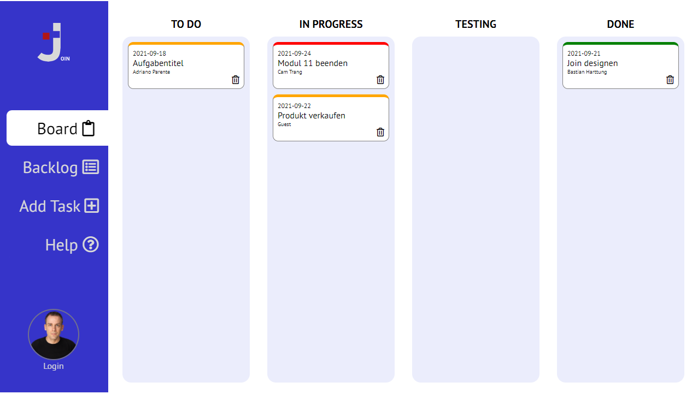

Help
How to work with Join Kanban-Board
How to add task
1. Go to 'Add Task'
2. Type in Title, Category, Description, Due Date, Urgency and add a person who had to solve the task
3. Click 'Create Task'
The Backlog
1. Go to 'Backlog'

2. You see all the Tasks in one page including the person who work on it.
Working with the Board
1. Go to 'Board'

2. First your task land in the To Do -Section.
3. You can move task by clicking on it and drop it to another section